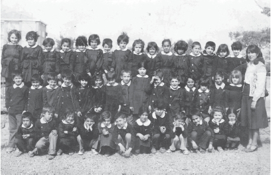

Göç hazırlığı başlamadan evvel defin işlemleri için erkenden köye gitmişlerdi annemler. Kardeşlerim çok küçük oldukları için onları yanlarına almışlar, beni ise annemin teyzesine bırakmışlardı. Ne yalan söyleyeyim çok iyi bakmıştı bana Fatma Teyze. Hangi yemeği istersem pişirmiş, nereye gitmek istersem götürmüştü. Hatta o koca kadın, alçakgönüllülük göstererek beni sırtına bindirip “deh” bile yaptırmıştı.
Ama o kediler yok mu o kediler, hayatımı karartmıştılar. Ancak onlar dışarı çıktıklarında biraz huzur buluyordum. Biliyorum, kötü bir niyeti yoktu kadıncağızın, ama olmayınca olmuyor işte. Onları her gördüğümde yüreğim bir bozgun yerine dönüyordu. Sevemedim bir türlü kedileri.
Göç kervanı düzüldü. Eş, dostla, akrabalarla vedalaşıp yola çıkıldı. Yaşım henüz altı olmuş ve biz köye göçmüştük. Hatırlıyorum, 12 Eylül İhtilali’ni köyde, komşumuz Yakup Amca’yla beraber radyodan dinliyorduk. O sevinip “iyi oldu,” dedikçe ben de seviniyordum. Yıllar sonra ihtilali yapanlara küfür edeceğimi nerden bilebilirdim? Bunu bilmediğim gibi köylülerin “İstanbul mu güzel, köy mü?” sorusunun bende bıraktığı sıkıntının acısını yıllar sonra Almancılara “İstanbul mu güzel, Almanya mı?” diye sorarak onlardan çıkaracağımı da bilemezdim.
İlkokul birinci sınıfa köyde başladım. “Çiçek oturun çocuklar,” deyip duran bir öğretmenimiz vardı. Adını hatırlamıyorum, gençten bir kadındı. Okul günlerim kısa sürmüştü aslında, kırk gün kadar burada yaşadık. Ama ne annem ne de babam, burada büyüdükleri halde bizim kadar köye alışamamıştılar. Bir süre sonra annemi ve beni yanına alarak evimizin temelinin atıldığı yere götürmüştü babam. Burada yaşayıp yaşayamayacağını sorduğunda benim o fedakâr annem: “sen bilirsin,” demişti. Babam bana da usulen sorduğunda “İstanbuuull!” diye ünlemiştim. Çünkü bütün arkadaşlarım oradaydı.
Yeniden İstanbul’a döndüğümüzde, yıllarca yaptığı, ama ta en başından beri ısınamadığı mesleğine dönüp dönmemek konusunda kararsızdı babam. Bir arkadaşının da desteğiyle, o çok sevdiği kitaplarla ilgili bir iş düşünmeye başlamıştı. Bir süre sonra karar verip kitapçı dükkânı açtı. İşte bizim hayatımız bu saatten sonra yeni kimliğine bürünmüş oldu.
Şaşırmıştım. Dönünce eski oturduğumuz yere yeniden yerleşecekmişiz gibi geliyordu bana. Bütün arkadaşlarıma, o bahçeye, Perili Köşk’e yeniden kavuşacağımı düşünüyor, her şeye kaldığımız yerden devam edeceğimizi sanıyordum. “Kiracı” olduğumuzu nerden bilebilirdim, nerden bilirdim zaman geçince bazı şeylerin değişeceğini!
Kısa süre de olsa köy ilkokuluna devam ettiğim için buradaki okula alışmam biraz zor olmuştu. Şimdi düşünüyorum da, sanırım okuldakilerin bana alışması daha da zordu. Çocukluk yaşlarında uzun sayılabilecek bir süre köy hayatını yaşamıştım. Dilim değişmiş, alışkanlıklarım farklılaşmıştı. Biraz kaba konuştuğum için arkadaşlarım garip bakıyorlardı bana. Ben de “çiçek” oturmadıkları için onlara.
Henüz yeni yeni bir şeyleri anlamaya, kendimi ve çevremi keşfetmeye başladığım vakit yeni bir “mahallem” olmuştu. İlk arkadaşım, “Kınalı Kapa Nüteyin”di. Bu ismi ona, henüz yarım yamalak konuşmaya başlayan kız kardeşim, kızıl saçlarından dolayı takmıştı. Aslında birilerine lakap takılması kadar, sevmeyeceği bir isim verilmesinin de en iyi örneği kendisiydi. Ona adını anneannem koymuştu. Belki de bu yüzden kız kardeşim onu pek sevemedi. O vakitler adet olduğu üzere, çocuklara büyüklerinin ismi verilirdi. Benim rahmetli anneannem de kardeşime (yüksek ihtimal jest olsun diye) babaannemin adını koymuştu. Babamın hoşuna gitmiş olabilir, annemse yutkunmuştu.
Yeni taşındığımız, tüm hayatıma etki edeceğini bilmediğim bu mahallenin sokakları, isimlerini çiçeklerden alıyordu. Şebboy, fulya, menekşe, sardunya, akasya, çiğdem, hanımeli, lale, zambak, sümbül... Bahçelerinde bunlar yetişirken, isimleri ne kadar hoşsa sokaklarımız da öyle kokuyordu. Böyle isimleri olan adreste oturmak bile insanın içini ısıtıyordu aslında. Bizim sokağın adı Orkide’ydi.

Siyavuşpaşa İ.Ö.Okulu 1-C sınıf hatırası, sınıf daha kalabalık olmasına rağmen o gün okula gelmeyenler vardı.